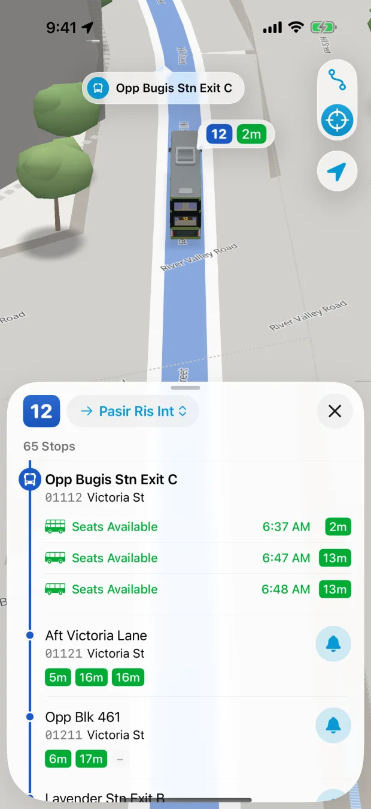
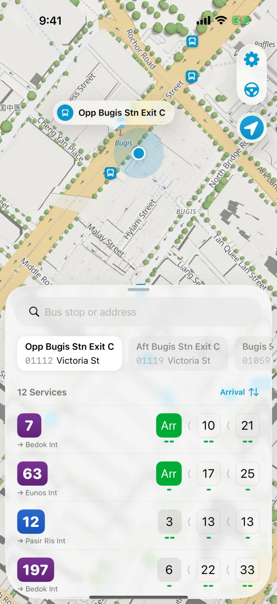
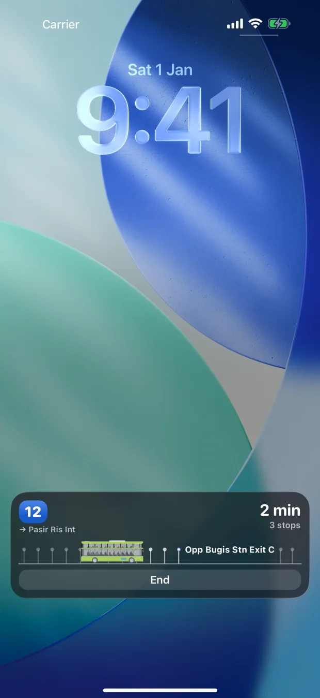

Singapore bus arrivals
See when your
bus is coming.
Check the next arrivals at your stop, see how crowded the bus is and follow it on the map while you wait.
Download on the App StoreiPhone · iPad · Apple Watch


A look at version 3.0
From the stop to the Lock Screen.

Follow buses in 3D
See buses move through the city and explore the stops along each route.
See the weather on the map
Check rain, clouds and thunderstorms before heading to the stop.
Glance at your arrival
Keep an arrival estimate in view on your Lock Screen or in the Dynamic Island with Live Activities.
Take a turn as Bus Uncle
Pick a real Singapore bus route and let the simulated bus drive while you focus.